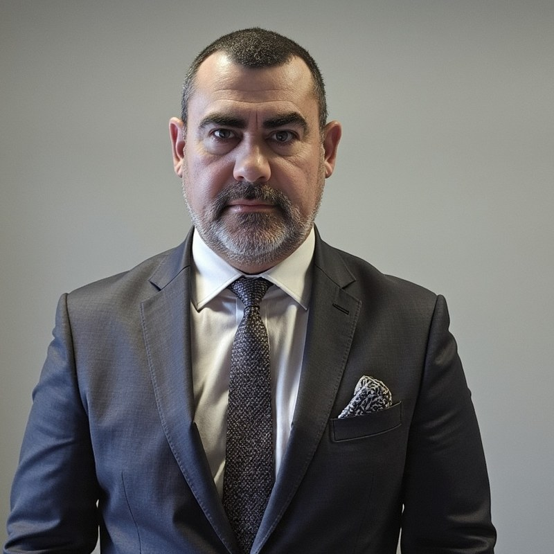

How customers find businesses has changed. We build for what comes next.
Eko Media is a New Zealand digital agency working across web, search, market intelligence and automation — for businesses that need to be findable, credible and operationally lean in a world reshaped by AI.
Four disciplines, one practice.
Each pillar works on its own. Together they form a complete operating layer for a modern business — the thing that makes you findable, credible, informed and efficient.
Website build & optimisation
Sites designed to be fast, clear and conversion-aware from the first wireframe. Built on platforms that fit the business, maintained as living assets rather than launched and abandoned.
SEO + GEO
Classical search optimisation paired with Generative Engine Optimisation — getting cited when buyers ask ChatGPT, Claude, Perplexity and Gemini. Two different games. We play both.
Market intelligence
Continuous tracking of competitors, search trends, pricing movements and category shifts. Not dashboards for dashboards' sake — the small set of indicators that actually change decisions.
Automated workflows
Make, n8n and Zapier wired into the tools you already use, with AI in the loop where it adds judgement, not noise. The kind of automation that gives a small team the reach of a much larger one.
Search didn't just change. It fractured.
A decade ago, being found meant ranking on Google. That game is still being played — but it's no longer the only one. A growing share of buyer research now happens inside language models: ChatGPT, Claude, Perplexity, Gemini. People ask, the model answers, and a small set of businesses get cited along the way.
Being one of those cited businesses is not the same skill as ranking on Google. It requires different content, different signals, different infrastructure. Most agencies haven't caught up. The ones who do will define the next decade of digital marketing.
Eko Media was built around this shift. Every engagement is designed to win in both worlds — the search results of today and the answer layers of tomorrow.
Generalists in discipline, specialists in context.
We don't take on every brief, but the sectors we work in span more than most agencies cover. Each one teaches us something the others benefit from.
Small, senior, AI-augmented.
Four operating principles. They shape what we take on and what we don't.
Small team, senior hands
No layers between you and the people doing the work. Every engagement is run by someone who's done it before.
Owned by you
Domains, accounts, content, automations — everything we build is documented and handed over. You're never locked in.
Plain reporting
Short, honest, on time. The metrics that move decisions, written in language a busy operator can act on.
Built to compound
We favour assets that keep working — content libraries, automation graphs, search infrastructure — over campaigns that stop the day the budget does.
A New Zealand agency, deliberately discreet.
Eko Media Limited is a New Zealand registered company based in Auckland, working with clients across the country and into Australia. We're set up to operate quietly — we don't trade on client names, logo strips or "trusted by" claims that other agencies wave around.
That's a deliberate choice. The businesses we work with often value discretion as much as outcomes — financial advisers, owner-operators, specialist trades — and the work speaks for itself once the right people compare notes.
If you'd like to talk about a project, the best way in is a direct email. We respond personally, not through a contact funnel.

Freddie Berning
Founder · Eko Media LimitedI started Eko Media to help New Zealand businesses navigate a moment of real change in how customers find them. Search isn't dying — it's splitting. Some buyers still type queries into Google; others ask ChatGPT, Claude or Perplexity and act on what the model recommends. Most businesses are set up for the first behaviour and invisible to the second.
My background sits across operations, technology and marketing — I run other businesses alongside Eko Media, which keeps the advice I give grounded in what actually works for owner-operators rather than what looks good in a deck. The work I take on is selective and senior-led; if it isn't something I'd implement in my own businesses, I don't recommend it for yours.
If you're a New Zealand or Australian business owner trying to make sense of where to put your attention — search, content, automation, AI — I'm happy to have a direct conversation about whether Eko Media is the right fit.